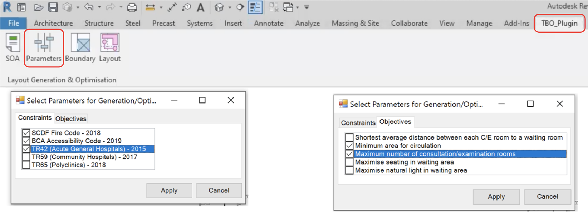

Project
Building Configurator
A Revit plugin that automatically generates & optimises layouts ⚙️
Categories
Product Design | Coding | Architecture
Organisation
Role
Team member, leading design, user testing, website design & development, & assisting with plugin development in C#
Other Members
· Jovin Lim (ASD)
· Valent Tan (ASD)
· Sheryl Mah (ASD)
· Charini Jinadasa (ESD)
· Wu Xinyun (ESD)
Duration
Jan - Aug 2022
Project Description
TBO (To Be Optimised) is an Entrepreneurship Capstone which enables efficiency in hospital design by helping healthcare architects to generate layouts based on authority guidelines and advice from medical planners, and optimise layouts based on pedestrian simulation throughout the generated spaces.
Before the design and development of our solution, we worked on market and user research, interviewing individuals and stakeholders such as architects, medical planners and facilities management staff from hospitals to find out more about the problems they face and how the project can add value to their routines and organisation. From the research and interviews, we were able to accurately pinpoint the target group of customers and beachhead market and understand the customers’ needs and constraints. Information from the interviews and feedback from customers aided our team’s design decision-making process, validated the different features for the product and helped us decide when to make necessary changes. With the information, we came up with a design of our product – a Revit plugin that automatically generates and optimises floor plan layouts for Specialist Outpatient Clinics.
The project consists of a downloadable plugin for Revit called BestFit which automatically generates layouts based on a selected floor plan and a website which showcases the plugin. The technical aspects include the use of C# to interact with Revit API, Python for optimisation algorithms, and HTML/CSS/JS for the website showcase. Rhinoceros and Grasshopper was initially used to visualize outputs from tests of procedural generation algorithms. Our plugin code repository can be found here.
Outline
Introduction · Literature Review · Solution Overview · User Interface & User Experience · Generation Algorithm · Optimisation Algorithm · Final Product · Impact · Future Works · Design Journals

Introduction
In Singapore, the Built Environment industry is forward-looking and plays a significant part in building Singapore's future. With Singapore at the forefront of BIM adoption internationally, it is evident that Singapore is keen to take steps to augment work productivity in its Architecture, Engineering and Construction (AEC) sectors. Hence, to ride on the coattails of this movement, we aim to ameliorate inefficiencies in the current architectural design process by automating and optimizing certain portions of the design process.
Problem Statement
Architects working on hospital projects require many months of meetings with various consultants and additional expertise from medical planners. They also need to consider over a 1000 pages of authority guidelines, regulations and codes while juggling ever-changing requirements from clients. This results in an estimated 30% more time and money wasted per project.
Scoping
However, due to the expansiveness of the architecture, engineering, and construction industry, we needed to reduce our initial scope and target a particular segment. After extensive research, we decided to focus on healthcare architecture in particular as Singapore has one of the fastest ageing populations in Asia (International Trade Administration, 2021). By 2030, one in four people will be aged over 65 years, and that this will rise to almost one in two by 2050 (Population Whitepaper, 2013). In addition, the Singapore government will be spending a significant portion of the budget to address healthcare infrastructure concerns in the short and long term and there are a slew of upcoming healthcare infrastructure projects such as the construction of new hospitals and polyclinics, extensions and reconstructions of existing ones. Hence, we believe that there lies a great opportunity to enable efficiency in the architectural design process specifically for healthcare architects.
Market Research
As healthcare architecture is a very specialized field that we were unfamiliar with, we had to engage in copious amounts of research to develop a better understanding of it. We first conducted interviews with healthcare architects, medical planners and people who worked in healthcare facilities management to understand more about the workflow of hospital design and validate certain assumptions we had made about problems faced in the planning and design of healthcare facilities. At the same time, we were on the lookout for pressing pain points that healthcare architects had to help us think of and formulate solutions to mitigate their problems.
Validation
From the interview responses we were able to extract out three key problems architects are currently facing. Firstly, there is an overwhelming number of codes and regulations to constantly check with and it is very time consuming to check and ensure compliance with all of them, especially when the design is ever-changing which often results in clashes with the codes. Moreover, frequent delays in communication between architects and multiple consultants cause updates to reach different parties at different speeds, leading to adverse consequences such as huge amounts of time and effort being lost. Lastly, continuous changes in demands and requirements from clients, especially when there are many stakeholders involved, makes it extremely arduous for architects to reconcile the differences and create new designs that satisfy all parties. As a result, architects are often very overworked. Hence, we created BestFit, a Revit plugin that automatically generates and optimizes floor plan layouts for architects.
Literature Review
Algorithm Design Requirements
Since the purpose of the plugin was to save as much time for designers as possible, it had to require as little computational power as possible. This allows designers to spend less time generating layouts and free up time for other demanding tasks while working on a project. Revit is a BIM modelling software with extremely complex data infrastructure with elements containing great amounts of metadata, hence it tends to have a lower loading speed during the generation of geometries. Therefore, the architecture of our technical code needs to be efficient by streamlining the flow of data. The algorithm should be flexible and parametric due to the numerous constraints, objectives, and contexts which designers typically face.
Generation
Machine Learning: Many generative models utilise machine learning to learn and generate better solutions. A common technique used in these models is clustering which allows data to be sorted based on different parameters and objectives. From the categorization of data, we can distinguish between solutions based on efficiency and continuously generate better results. The table below shows an analysis of some techniques used:
Table 1: Description and evaluation of machine learning models
The generative models explored and researched previously were unsuitable for our goals. This was proven by a small test we conducted on Grasshopper using the general logic for unsupervised learning with the Grasshopper component Galapagos. The simple graphing of room (node) relations and proportional distance were taking a substantial amount of time (7min 30s) to compute without giving much improvement in results.
Procedural Generation: It is a generative method which utilises specified logics and constraints to generate data with an element of randomness. Typically, procedural generation was used to create dungeon crawler games in which floor plans of levels in the game are generated at random. We found this method to be more feasible in our goal as time was of the essence. We studied several procedural generation algorithms and models done by researchers as well as designers for architectural spaces and layouts. Through our research of procedural generation, we studied six techniques that were used by architectural projects for the automatic generation of floor plan layouts.
Table 2: Description and evaluation of procedural generation models
Some simple test cases for procedural generation were done using a spatial matrix in Rhino and Grasshopper for visualization. The production of solutions was much faster in a matter of seconds for each solution as compared to the seven minutes and 30 seconds for machine learning which was not close to producing a feasible solution for just graphing the relative adjacency between the nodes.

Figure 1: Description and evaluation of procedural generation models
Optimisation
For optimization problems, a decision maker can express preferences such as numeric goals for the various objectives. The goal is to seek solutions that make as much progress as possible toward all objectives. Using goal programming methods converts each goal into at least one equality constraint and the objective would be to minimize deviations.
Table 3: Description and evaluation of procedural optimization methods
Solution Overview
Product Architecture
Figure 2: BestFit Product Architecture
Our plugin’s architecture comprises three main parts as seen in Figure 2. Firstly, user inputs on Revit are taken in and stored in excel files to feed to the backend code. Next the backend code in the form of Python libraries will take in contextual information from the excel files for the room generation and optimization algorithms to generate, evaluate and rank the different solution. Lastly, the best few design outputs according to the evaluation of the Python libraries will be ranked and shown to the users on Revit for their selection.
Plug-in Workflow for users
Figure 3: BestFit User Workflow
Our plugin is integrated into the Revit platform as we have found out through market research that our users, healthcare architects, are mandated to use Revit for their design submissions. After downloading and installing our plugin, users will be able to access it on the Revit workspace. As seen in Figure 3, with just four simple steps – SOA, Parameters, Boundary and Layout Generation – users will be able to automatically generate several optimized layouts to choose from.
User Interface & User Experience
This section describes the progress of the user interface and user experience component from its initial to later designs informed by the feedback from user testing. It will contain an analysis of the feedback received with key decisions and proposed steps to achieve them, along with an elaboration of the limitations faced during this process.
Information Architecture, low-fidelity wireframes to high-fidelity prototype
Figure 4: BestFit Information Architecture
This is an overview of our information architecture, with three key steps to use the plugin. Step 1 was for users to define the boundary, step 2 for them to identify the boundary and input the schedule of accommodations, and step 3 for them to select constraints and objectives to automatically generate many optimised layouts. After charting out the system and information architecture of our product, we proceeded to design low-fidelity wireframes as seen in Figure 5 to map out the steps of how users would use our product.
Figure 5: BestFit Low-Fidelity Wireframes
After we ironed out the workflow of how users were going to use the plugin, we went forward to translate these low-fidelity wireframes to a high-fidelity prototype that was integrated with Revit’s existing user interface as seen in the Figma prototype below. The user flow can also be viewed here.
User Testing & Feedback
Before translating the user interface into code and integrating it with the other components of the Revit plugin, we wanted to find out whether the flow was intuitive and discover how we can improve on the plugin’s design. Hence, we reached out to several healthcare architects and medical planners from varying companies and positions and conducted user testing sessions with them to get unbiased perspectives and comprehensive feedback for our plugin.
Prior to the user testing sessions, we prepared a discussion guide with all the main and follow-up questions we intended to ask such that we can keep to a time limit of 30 minutes. The user testing had five main sections:
1. Introduction and warm-up, getting to know participants’ current workflow and challenges when designing hospitals/Specialist Outpatient Clinics
2. Selecting Boundary
3. Indicating Type of Space and Schedule of Accommodations
4. Selecting Parameters for Generation and Optimisation
5. Results of Layout Generation
Table 4 contains the detailed user feedback that we obtained during these user testing sessions, with the respective corresponding screenshots of the high-fidelity prototype that we allowed the architects to try out on their own by providing them screen-control on Zoom.
Table 4: User feedback regarding plugin user interface & experience
Key Decisions made after User Testing
After analysing the feedback from the user testing, we sieved out what was feasible for us to work on next and summarised it into three key next steps:
1. Making user flow more intuitive: Firstly, we needed to make slight adjustments to the workflow of the plugin as some parts of it was unintuitive for the users. We discovered that the architects found it more logical to determine the type and number of rooms according to the project brief they are given before drawing and choosing the boundary to design within. In addition, we needed to there were some terminologies that we used in our plugin (e.g. role delineation level which guides the schedule of accommodations for hospitals and clinics) that the architects were unfamiliar with as it was not commonly used in Singapore or that they found better alternatives for (e.g. zoning instead of boundary).
2. Allowing for greater flexibility: Next, the architects gave feedback that the plugin’s method of inputting information was very limited (i.e. providing users with a standard template that they can only add or subtract from). They suggested alternatives such as a slider function which allows them to change parameters such as path widths or sizes of rooms which reflects changes of the floor plan in real time, or a function whereby they can simply upload an excel sheet with their schedule of accommodations which makes it easier for them to extract or transfer information. With regards to the selection of constraints and objectives, the architects also suggested that it would be nice if they could create their own or edit existing formulas for the constraints and objectives, such that they can better customize to their project’s needs.
3. Increasing the clarity of generated floorplans: Moreover, the users also mentioned that it would be very helpful if the floorplans generated also included a colour scheme such that they would be able to easily identify the type of rooms generated. Furthermore, at this stage, they advised that it was not necessary to show such a high level of detail in the floorplans and that it could be more diagrammatic instead. Last but not least, they also suggested that it would be good to provide an indication of the corresponding objective function values for each layout option (e.g. if they were optimising for the maximum number of consultation rooms, they wanted to know how many rooms each generated layout option had). The next portion elaborates on the technical work behind the final user interface, as well as the technical challenges and limitations of the user interface.
Limitations
Transfer of data between C# libraries, Revit and User Input: The Revit API does not allow for the storage of custom data and information, only pre-defined Revit elements and datatypes. The Revit API does not allow for the creation and storage of custom data and information, only pre-defined Revit elements and datatypes which are unsuitable for the plugin. Different C# classes must be created for each button and they execute different commands which sometimes require the input data for the previous button clicked. Since the plugin relied on information such as custom quantities, parameters and constraints, it could not rely on the current Revit data infrastructure to store information for future extraction. It was also impossible for data to be transferred globally between different C# classes despite being under the same library. This posed a challenge for transferring data from user inputs.
Visualization for design outputs: To get the most accurate representation and clarity for the design outputs, the generated design options should be shown on the Revit interface along with the existing elements that designers already have. As such, the plugin must visualize outputs using native Revit elements within the same interface which the users are operating from.
Design Options
Within Revit, users can manually create design options which hold the different elements on the same point in 3-dimensional space. This allows for the user to store and retrieve multiple design options without having to save or delete the existing Revit elements on the same space. However, this functionality was currently not accessible through the Revit API. Hence, it was infeasible for our plugin.
Transient Elements
The first option tested was the use of transient elements, which was a feature of the Revit API. This was inspired by Dynamo and Rhino inside Revit, in which the elements displayed were transient and impermanent, allowing instant changes in the visualized outputs when users altered certain parameters or constraints. However, after several tests and further research on using transient elements within Revit, it was discovered that the transient elements only worked for simple, generic shapes which are generic models in Revit and not different types of building elements. The display duration of the transient elements generated were also uncontrolled due to the lack of development of this in the Revit API.
Figure 6: Rhino Inside Revit (left), Dynamo (right)
Transaction Rollback
Transition rollbacks can be used to reverse the steps of generation for certain elements. Typically, a transaction must be started using the Revit API to generate elements and these transactions must be committed for the elements to become permanent and remain on the interface. One visualisation option that the team tested was to use transaction rollbacks when users are selecting between the different layouts generated by BestFit. Figure 7 shows the general flow of using transaction rollbacks for output visualization.
Figure 7: Transaction Rollback Flow
However, Revit does not allow for users to interact with anything outside of the current Revit interface while a transaction is open. This meant that users could only select a single iteration from all the layouts generated. Figure 8 visualizes the point of failure for this method of output visualization.
Figure 8: Transaction Rollback Point of Failure
Steps Taken
Temporary Excel Files: To bypass the problem of data transfer, it was fairly common to create temporary directories and files to store data for extraction later on. This idea was applied in the plugin in the form of excel sheets which allowed for easy parsing with the Microsoft.Office.Interop.Excel C# library. Figure 9 shows a generic chunk of C# code to create Excel files.Figure 9: Code for creating Excel files
Figure 10 shows a generic chunk of C# code to open an Excel file through C# and read the necessary lines of data from it. This was the main method used for transfer of data between the C# libraries.
Figure 10: Code for reading existing Excel file
Low Fidelity Options: The approaches to create temporary elements for the selection of each design iteration did not work well due to the factors mentioned above. The team had to work around this issue and continue providing users the ability to select different layouts while being able to pan around within the Revit interface to inspect the layout with comfort. From our user testing feedback, designers also preferred to see a simple low-fidelity layout which easily portrays the circulation and space distribution of the layout. The approach to this issue and user wants was to create permanent Revit elements in low-fidelity layout (without furniture) which shows a simple version of the layout with colour coding for the different types of spaces within the floor plan. As the layouts produced were low fidelity, it was quick to generate them multiple times. The plugin collected the necessary information on the elements created for each iteration, placed the elements in their positions when an iteration ID is called upon and delete them to create space upon selection of another iteration. The final desired selection could then be converted into a high-fidelity version. This flow, as shown in Figure 11, allows users to inspect different iterations relatively quickly while allowing them to generate a high-fidelity version of the layout if needed.
Figure 11: Low-fidelity iteration flow
Final User Interface and User Experience Technical Coding
Data Transfer: Throughout the user workflow, user inputs are typically stored in Excel files which are temporarily created by the plugin. The general flow of information and data is visualized in Figure 12.
Figure 12: User Input Data Flow
BestFit then reads the information from the excel files and uses it for the layout generation and optimisation algorithm. The output is then visualized in Revit in the form of generated Revit elements.
User Input: BestFit uses C# to interact with the Revit API for creating the application and executing commands within Revit. For the prompting of users to input the required data, the plugin employs modal windows forms whenever a button from the TBO_Plugin tab is clicked. Figure 13 shows the different buttons for users to click in the TBO_Plugin ribbon and Figure 14 shows the code used for generating the tab (blue) and the buttons (red).
Figure 13: TBO_Plugin Ribbon & Buttons
Figure 14: Code to generate ribbon tab and buttons
Figure 15 shows an example of a windows modal form which is employed when users are required to input data which is necessary for the next steps of the plugin. The IExternalCommand class from Revit API is used to execute the command for windows to pop up when interacting with Revit. Figure 16 shows the general code to create pop-up windows.
Figure 15: Modal Windows Form
Figure 16: External Command to generate pop-up windows
After the desired options have been selected, the plugin then creates Excel files with the necessary information or writes this information into existing Excel files which have been created in previous steps. Excel files are deleted once the information is no longer needed or re-written once a button has been clicked again.
Layout Visualization: The plugin provides different design options for chosen layouts which the users specify in the first three steps of the user workflow. A pop-up window is used to create an interface which the user interacts with to select a desired generated layout and to view the objective function values for the specified layout. Figure 17 shows an example of the window created and its user interface. Selecting any of the iteration IDs would generate a layout within the Revit interface in low fidelity (Figure 18, left) and clicking “Apply” would generate a high fidelity version of the chosen iteration (Figure 18, right).
Figure 17: Pop-up window for selecting generated layouts
Figure 18: Low fidelity layout (Left), High fidelity layout (Right)
Generation Algorithm
The Generation Algorithm is designed to generate a program matrix with random variables, where the decision space for the variables will be refined through the Optimization Algorithm. Therefore, the Generation Algorithm must minimize being pre-deterministic which may prevent achieving a global optimal solution while ensuring the generated results are acceptable and usable floor plans.
Method 1: Discrete Procedural Generation
The initial approach uses a generative method that procedurally fills up the matrix cells with rooms at random. To find an appropriate subdivision of the matrix, existing SOC floor plans were studied to find the common room size of a consultation room, which is 4-by-4 meters. The size of each matrix cell is then determined to be 2-by-2 meters, with a 2-by-2 cell representing a consultation room. The size of each cell also meets the minimal width required for a corridor in an SOC, which is 1.8 meters. Constraints were added to refine the randomness as some rooms had specific requirements such as the reception to be generated near the entrance. A for loop will run through every cell in the matrix to check the suitability of the cell for any of the required program. The goal was to create a black box of all possible solutions to use the Optimization Algorithm to find the global optimal solution.
While the approach allows a matrix to be created in less than a second, the result tends to be nonsensical and would need a significant amount of time for the optimization algorithm to find a usable result. In addition, the corridors generated had a maze-like pattern with some rooms having no access to a corridor.
Method 2: Cluster Procedural Generation
Instead of filling individual cells of the matrix with rooms, cluster of rooms were created with corridors attached to the rooms, ensuring access to any consultation room. To increase flexibility of the algorithm, transformation functions were added which rotates the clusters since not all clusters are symmetrical in size and configuration. The clusters are still placed at random locations by running through the matrix cells, with the same constraints used in method one. An additional constraint was added which requires the corridors of each cluster to be adjacent to each other in order to achieve a continuous corridor, creating access from the entrance to every consultation room. At this point, only the consultation rooms and entrance were prioritised since the other programs of the SOC can be added by replacing the consultation rooms in the clusters.
The feedback given after the user testing and review two was that even though the corridors are connected, the rooms are still not aligned and organized, creating a maze-like circulation which hinders in way finding. The disorganized placement of clusters will also affect structural column placement which follows a strict grid system. The large clusters were not effective in filling up the floor plate, resulting in numerous empty and unusable spaces.
Method 3: Grid Cluster Procedural Generation
A grid system was developed to guarantee an organized layout of rooms and to prevent collision between columns and rooms. The grid size used was 7-by-8 meters, which is a typical grid system used for SOC. To accommodate for the odd length, the matrix subdivision was changed from two meters to one meter. Every cluster created follows the grid size, with every cluster containing rooms and corridors. The transformation function now includes mirroring, which increases the decision space and variety of results generated. Instead of cycling through every matrix cell, the matrix is divided by the grid system with each grid cell to be occupied by a grid cluster. The constraints used follows a room placement logic which is derived from studying the relation between programs in the SOC. For example, the entrance will be connected to the reception, which have priority connection to the waiting area and triage.
Even though the problem of columns and organization is resolved, the feedback from user testing and review three illustrated the problem of having too much area dedicated to corridor spaces. The algorithm failed in optimizing spaces for SOC programs since access corridor area were generated to ensure connectivity of the circulation.
Method 4: Corridor Cluster Procedural Generation
After reviewing the International Health Facility Guidelines, circulation within the SOC can be categorized into a few typologies. By referencing the different typologies, the SOC circulation can be designed first, and the rooms can be added subsequently. The circulation generated considers patient and staff flow, creating dedicated staff corridor which leads to consultation rooms. To allow for further flexibility of the algorithm, some programs are instantiated separately due to their unique requirements such as the reception and staff room. The size of each matrix cell is adjusted to be 1.2 meters to ensure the rooms meet the minimal area requirement stated in the medical guidelines. Unlike the free placement in method one and two and the fixed grid placement of method three, columns of free spaces measure three matrix cell wide were created. While the width of the rooms was kept constant, the depth differs depending on the program. The columns will continue to be stacked with rooms until the columns are filled.
Some positive comments received were that the corridor area is minimized with the use of double loaded corridors. The new methodology worked well with the optimization code and did not generate any results with empty unusable spaces.
Limitations
Due to time limitations, only the ‘comb’ typology was used due to the simple geometry the typology has, therefore the floor plate of the SOC must be rectilinear in geometry. The Generation Algorithm also does not consider existing or predetermined rooms such as toilet stack and stairwell.
Optimisation Algorithm
Corridor generation using NSGA-II
As our initial approach was to generate clusters randomly within the matrix layout, the initial goal of the optimization algorithm was to generate corridors within the empty space connecting all clusters while minimising the total circulation space.
To implement this, we used the NSGA-II algorithm. The empty space within the matrix layout were assigned to the algorithm as binary decision variables using which the algorithm was expected to generate the corridors. However, this method was deemed unsuccessful as the initialization of the decision space was too random making it hard for the algorithm to successfully detect feasible circulation paths from one cluster to other.
The following illustration is an example of a solution retrieved through this method where infeasible corridors were generated.
Figure 19: Random Corridor Placement using NSGA-II
Corridor generation using Greedy Algorithm
As the corridor generation using NSGA-II was unable to provide us meaningful solutions, we attempted to use a greedy algorithm to generate the corridor spaces within the layout. This was done by evaluating the shortest path from the reception to each individual cluster. However, this caused the paths to be generated independently irrespective of the existing generated corridors. Hence, excessive circulation space was created which made the floorplan nonoptimal.
Cluster grid optimization using NSGA-II
Moving forward, as we decided to change the layout generation method, moving away from the random cluster placement to a matrix grid method where the matrix was divided into sub-grids and each grid occupied by a cluster. The goal was hence to optimise the placement of clusters within the grid with respect to certain objectives and constraints.
Parameters: The objective functions, decision variables and constraints considered during this stage are tabulated below.
Table 5: Objective Functions, Decision Variables and Constraints
The clusters ID simply refers to the unique identification of a specific cluster and this is used as a decision variable for the algorithm to select which cluster to be placed in a specific grid space. The cluster rotation refers to the orientation of the selected cluster to be placed in the grid space.
As for the constraints, the main constraint we considered at this stage was to ensure that all clusters placed in the grid are connected to at least two other clusters adjacent to it in order to make sure it is possible to navigate the whole space by starting from one specific point. We should also make sure that all user specified parameters such as the number of consultation rooms, number of toilets, number of waiting areas are being met.
Issues Faced:While the cluster grid approach was definitely an improvement and a step forward from the previous generation and optimization methods we tried out, we still faced several issues when implementing the method.
One such issue was related to the corridor placement and connectivity. Manual corridor generation was no longer required under the cluster grid method as the pre-determined clusters included in-built corridors and hence the goal was to ensure that the clusters are placed within the grid in such a way that the inbuilt corridors and connected to each other. However, following the generation and optimisation of the matrix layout, while the algorithm was able to ensure cluster connectivity, we noticed how the cluster connectivity was not meaningful and user friendly.
Figure 20: Layout generated using cluster grid method
We also faced issues when implementing our second objective of minimizing the average distance from a waiting room to a consultation room as the NSGA-II algorithm was unable to accurately evaluate the objective function. While we were unable to accurately diagnose the issue that we were facing, we noticed how one reason for this might be the complexity of the Breadth First Search (BFS) algorithm that we used in the objective function which might be affecting the runtime of the algorithm. Therefore, it was essential that we change the approach in evaluating the second objective.
After analysing the issues faced and incorporating the feedback received through user testing, we decided to switch to different approach of generating and optimizing the layouts using fixed typologies.
Cluster grid optimization using fixed typologies and column grid methods
We decided to first generate a fixed layouts using the corridor typology to fill the empty space with functional clusters. The goal was to optimise the placement of clusters within the corridor typology with respect to specified objectives and constraints. A fixed typology will improve the result a lot as the main issue for previously generated algorithms was that they were too random to be a valid floorplan. Hence, starting from a fixed pre-defined typology will help our model perform better by generating a good starting point, which facilitates future learning in optimization.
Parameters and Settings: The objective functions, decision variables and constraints considered during this stage are tabulated below.
Table 6: Objective Functions, Decision Variables and Constraints
he decision variable used was clusters ID, similar to the decision variables used here with the difference being that the cluster types now represent specific room types instead of large section with corridor spaces.
As for the constraints, through the generation and placement of the clusters we should always ensure that the clusters are connected to the circulation space that is pre-generated. We should also make sure that all user specified parameters such as the number of consultation rooms, number of toilets, number of waiting areas are being met. Finally, we should restrict the generation of empty space within each column to make sure that each column in the layout is filled with meaningful and functional clusters.
Limitations: Random initialization and crossover operations in the NSGA-II algorithm
As explained in earlier sections, the NSGA-II algorithm is a genetic algorithm that by default initialises a random population which is evaluated to select a parent population which is then crossed over and mutated to create feasible off-spring populations and returns to the user the most optimal solutions at the end of the number of generations.
While the random initialisation works well for problems with a few constraints, once the number of constraints in the problem is increased the random initialization tends to limit the accuracy and functionality of the algorithm. This is due to the number of feasible solutions in the initial random population that agrees with all constraints set in place will be quite low. In some cases, there may not be any feasible solutions in the initial random population as well. If a few feasible solutions are available, the algorithm will then proceed to crossover and mutate these solutions. As the crossover and mutation process would also occur randomly, there is no guarantee that the crossover and mutation processes will result in better solutions as there will be a high chance of the solution being infeasible once crossed over and/or mutated. This in the end would result in infeasible solutions or very similar solutions being returned at the end of the optimization process as the variety of initial feasible solutions were quite low.
The best way to resolve this issue was to manually code the initialization, crossover and mutation criteria within the pymoo module or for us to code the NSGA-II algorithm manually by scratch in order to eliminate the randomness and make the process suit our problem more specifically. Unfortunately, as this was a complicated and time consuming process we were not able to implement it due to time constraints.
Instead, we looked into reducing the number of constraints that we were including in the algorithm and also relaxing some of the constraints by setting upper and lower bounds instead of assigning a fixed value. While we were able to improve our solutions by doing so, the number of unique solutions we could obtain for a specific population figure was still quite low. Therefore, to obtain more unique and feasible solutions we decided to run the algorithm for several population figures until it returns at least four unique solutions to us.
Final Product
User Interface
Input SOA: When users click on SOA, it would automatically instantiate an excel sheet with a template with key headers such as the room type, area, and quantity as seen in Figure 21. Users can simply key in the number of rooms and it would automatically compute the total area of the individual type of rooms. After users save and close the excel, this information would be stored by the plugin.
Figure 21: Automatically generated excel sheet once user clicks on SOA
Selecting Parameters and Objectives: Next, users can select parameters such as constraints and objectives to inform the generation of the layout options. Figure 22 shows examples of the constraints and objectives we have on our plugin. Constraints include authority guidelines that the designs need to adhere to, and the objectives include minimizing or maximizing the distance between two points or the number of rooms.

Figure 22: Dialog box showing constraints (left) and objectives (right) that appears when user clicks on Parameters
Boundary Input: Moving on, users can select the boundary that they would like to generate the layouts within as well as indicate the main path of circulation such that the plugin can identify the entrance of the boundary selected. To provide more guidance, a dialog box (Figure 23, top) with brief instruction will first appear to guide the user on the following steps such as selecting the floor and model lines which indicate the corridor adjacent to the boundary selected.
Figure 23: Dialog boxes that appear in sequence (from top to bottom) once user clicks on Boundary
Layout Generation: The last component of our plugin is the layout generation. When users click on layout, a dialog box (Figure 24, left) will appear showing the various layout options as well as the corresponding objective function values. Users can feel free to click on any of the options to try them out and each time, a low-fidelity layout (Figure 24, right) will appear upon clicking. Users can also automatically calculate and generate the distance from the furthest room to the fire escape within the layout option to make more informed decision when selecting the layout options. When they are finally satisfied with an option, they can proceed to click apply, and a high-fidelity layout would then appear.
Figure 24: Dialog box and visualisation of layout options once user clicks on Layout
Generation Algorithm
The generation algorithm is a python function that creates the SOC plan in the form of a matrix that adapts to different floor sizes, entrance location and program requirements. To reduce the computing speed, the generative method used translates the design process into a series of functions which creates the program matrix, returning a design within less than a second.
Creating Matrix Setting: The contextual information and user input are stored within an excel file which then converted into a global dictionary. The algorithm must adapt to the different possible scenarios such as size and orientation of the clinic, thus the approach taken is to transform the clinic into the standard configuration where the x-length is always larger than the y-depth, and the entrance always located on the south. This information is stored in a global dictionary, which allows the algorithm to undo the transformation after optimization.
The schedule of accommodation, objectives and constraints selected are stored as a separate global dictionary, which prevents confusion when calling for the required dictionary. The information is accessed to check if the number of required programs is satisfied and to initiate the selected constraints and objectives during the optimization process.
Generating Columns and Rows: The clinic follows a ‘comb’ typology, where double loaded corridors branch out from the main circulation which serves as the entrance to the SOC. The number of corridors or ‘columns’ are calculated from the x-length with the equation:
The equation will return either a value of 0, 1 or 2, which corresponds to different column configurations:
0 = 1 single loaded corridor + n double loaded corridor + 1 single loaded corridor
1 = (n+1) double loaded corridor
2 = 1 single loaded corridor + (n+1) double loaded corridor
A connecting corridor will be introduced to connect the different columns if the y-depth is more than 24m. The connecting corridor will only split the flanked columns, creating new columns. A dictionary named ‘col_prop’ is subsequently generated to store the name, bottom left coordinate of the column and column length, which will be used in the generation of the floor plan.
A nested list called ‘m_id’ is created as a global variable which can be accessed and edited with the subsequent functions. The index of the parent list represents the y-depth values while the element of the child list will represent the x-length values. The matrix values can be accessed through the y-x-coordinate of the nested list.
Figure 25: Nested list is used to represent a matrix array
Creating Anchored Programs Function: The reception and staff room are two programs that are dependent on the location of the entrances, and have a specific configuration within the clinic, thus will be initiated separate from the other programs. The reception will be generated within the double loaded corridor nearest to the designated entrance and will span across two columns. The staff room will be generated on the opposite corner from the reception, connected to the staff corridor at the end of the clinic. Two functions to find the y-x-coordinate where the reception and staff room should be generated from are created, which adapts to the different column configurations mentioned above.
Creating Program Functions: The programs to be initiated within the clinic matrix is created as a function, and when called will replace the empty spaces within the columns with the initiated program. These functions are called clusters as the function works by replacing a cluster within the matrix instead of changing the matrix values individually.
Figure 26: Cluster replacing matrix value from a selected target cell
When the cluster function is called, the function will check if the position of the target coordinate is valid before finishing the task. If the call is successful, the function will return the dictionary “cl_prop” which stores information of the cluster. At the same time, a new target coordinate will be returned to be used to call for the next cluster within the column. To decide which cluster function to call when generating the matrix, an ancillary function is used which takes in an integer as the argument and calls for the corresponding cluster function.
Generating the Matrix: A function for generating the matrix will first check the “soa_dict” for whether a reception and staff office is required and will be the first two programs to be generated within the matrix. The ‘col_prop’ will be updated with the columns affected by the reception and staff office adjusted to prevent any other programs from generating over the reception and staff room. One of the arguments taken is a list of integers, the decision space for the optimization, which will be used to call for the different programs in clusters. Each “cl_prop” generated with each cluster will update the main dictionary “cluster_prop”.
Generation Algorithm Function for Optimization: A final function is created which calls all the other functions to generate one matrix, which is one possible clinic design.
Optimisation Algorithm
The goal and purpose of the optimization algorithm is to generate and optimize the matrix grid layouts based on the different objectives and constraints set in place. The optimization process is carried out using the NSGA-II algorithm (Non-dominated Sorting Genetic Algorithm) which is a generic population-based metaheuristic optimization algorithm.
Parameters: The final objective functions, decision variables and constraints that are used in the optimization process are tabulated below in Table 7.
Table 7: Objective Functions, Decision Variables and Constraints
The objectives were selected and set in place with the goal of increasing the spatial comfort of the users. The decision variable which is the cluster ID’s simply refers to the unique identification of a specific cluster and this is used as a decision variable for the algorithm to select which cluster is the most suitable to be placed in a specific grid space.
As for the constraints, as mentioned here, through the generation and placement of the clusters we should always ensure that the clusters are connected to the circulation space that is pre-generated. We should also make sure that all user specified parameters such as the number of consultation rooms, number of toilets, number of waiting areas are being met. Finally, we should restrict the generation of empty space within each column in order to make sure that each column in the layout is filled with meaningful and functional clusters.
NSGA-II Algorithm: The first step of implementing the NSGA-II algorithm is to initialise the parameters that will utilized. This includes the number of decision variables, number of objectives, number of constraints and the lower and upper bound for the decision variables to be chosen from.
The number of decision variables used is specified as a variable named “totalElem” through the generation algorithm. The value of this variable is determined by adding up the number of clusters that the generation algorithm will fit for each empty column. The number of clusters that the generation algorithm will attempt to fit in each column is determined by dividing the length of the column by the length of the smallest cluster.
The lower and upper bound for the decision variables is provided as the smallest and largest cluster identification number. This allows the algorithm to select from the specific clusters that we have created in the generation algorithm. The algorithm then allocates the decision variables to the “testCR” variable using which we call out the layout generation function within the optimization algorithm. This is done under the evaluation function inside the algorithm.
Following this we specify and call out the functions for the objectives and constraints that we expect the algorithm to evaluate and optimize the population space for. In order to execute the NSGA-II algorithm, we specify parameters needed for the algorithm to run, which includes the size of the initial population and number of offspring along with the sampling, crossover and mutation methods that we hope to use. Finally, we minimize the algorithm for the problem we had designed by specifying the desired number of generations.
The NSGA-II algorithm will then proceed to select a random initial population which will be evaluated assigned a fitness based on the constraints and objectives that we have specified. The strongest feasible solutions are selected as the parent population which will then be crossed over and mutated in order to create an off-spring population. This process is repeated until the number of generations specified is met and the algorithm returns the most optimal and feasible solutions.
Ranking: The solutions obtained from the algorithm are then ranked based on optimality. A ranking function ranks the solutions obtained by the optimization algorithm. The solutions are first normalized using the utopia and nadir points where the utopia point represents the most ideal solution, and the nadir point represents the worst possible solution. Weights are then assigned for the objectives based on the preference or importance and the decomposition method named Augmented Scalarization Function (ASF) is used to calculate the score for each solution with the best solution having the lowest ASF score. The unique solutions are then assigned to a dictionary with the respective rank. The solution space is then ranked from the most optimal to the least and exported into excel which will then be used by the C# code to generate the layout on Revit.
Final User Testing
To fine-tune our plugin before the final showcase, we conducted a last round of user testing in the first week of August with the same five groups of healthcare architects and medical planners. For the final plugin, there were a few features that were newly introduced to the users for the first time. Firstly, users can input their schedule of accommodations before they select the boundary to generate within.
Figure 27: SOA, Boundary warning, low-fidelity layouts
Moreover, they can simply copy and paste the schedule of accommodations from their project brief into an excel sheet template that will be automatically opened up when they click on the SOA button in Revit (Figure 27, left). Next, when users select a boundary that is too small or large based on the schedule of accommodations they have indicated, there would either be a warning (Figure 27, middle) indicating how much excess space would be generated or an error requesting for users to select a larger boundary if not they will not be able to proceed with the generation. Furthermore, users are able to enjoy a shorter waiting time for the generation of different layout options as the plugin shows the layouts in low-fidelity first (Figure 27, right), and only reveals the details within the layout after the users have selected a particular layout that they are satisfied with. At the last step, users will also be able to see the corresponding objective function values for each of the layout options they are presented with. Lastly, for each of these layout options, there is also an option for users to automatically generate the fire escape path and distance for each layout option they select (Figure 27, right).
Feedback from users and evaluation of feedback
Table 8: User feedback for final version of plugin
In summary, the architects thought that the final version of our plugin produced layouts that were believable and useful, and that our plugin was a great starting point for them to generate many quick layouts. However, there is definitely still room for improvement before the product becomes market-ready and the layouts generated can be further refined with some amendments to the generation algorithm as expounded in Table 8. Nevertheless, the architects that we interviewed are positive that this plugin has great potential and that it would be very helpful for them as it would allow them to reap immense time and cost savings.
Impact
Societal Impact
"Human touch" or the idea of the human element in design refers to the empathetic relationship that exists between designer and user. It is possible that our plugin lacks the human element since it uses computations to generate numerous designs. Although thousands of computationally generated designs are available, it is still up to the architect to choose which to develop further. Thus, our product enables architects to take part in the paradigm shift in design and technology by enabling them to utilise computational design methods instead of taking over the entire design process themselves.
Team Impact
As our product is in the form of a software, this requires the team to spend hours staring at the visual display units of laptops, computers and this may result in harmful effects on the vision of our teammates if not managed properly. Sedentary behaviour and using electronic devices for long periods of time may also result in adverse ramifications such as muscle soreness and poor posture.
Environmental, Health and Safety Impact
Due to the computationally intensive nature of our software, adoption of our solution may have adverse environmental effects. Despite the negative impact, architects can design hospitals better to improve the user experience of the space through smart space planning. In addition, we provide architects with an automated layout generation and optimization solution that takes authority regulations & medical planning guidelines into account. Many manual tasks are automated, which in turn helps architects achieve a better work-life balance. Codes and guidelines will become less of a burden for architects, so they can dedicate their time to more critical aspects of design. Furthermore, a rise in artificial intelligence and automation has become a concern for many people due to the possibility of being replaced in their field. It could be argued that a plugin that generates a floor plan automatically could be a threat to the architect's role. However, an architect's diverse workload makes it impossible to replace with a simple digital tool. Our plugin aims to relieve architects of their heavy workload, allowing them to focus on essential tasks that require their expertise. It is common for humans to make mistakes because of monotonous manual tasks. The risk is averted by our plugin to perform these laborious tasks.
Future Works
Further Development of Plug-In
Moving forward, there are several aspects of the project which can be improved on regarding the functionality of the plugin for users in the future. These include an increased range of types of clinics to cater for, increase in the variation of logic for the layout generation to explore different types of algorithms as well as an eventual extension of the plugin to other building typologies.
Increased range of clinical types: For the plugin, the team researched on the basic types of spaces and rooms required for a generic clinic. However, different types of clinics have many requirements for special types of rooms and equipment which vary depending on the clinic as well as clients. This meant that for greater ease of for users, more research must be done with regards to each type of clinic and the subsequently, the types of rooms, layouts and sizes that they require. This would significantly decrease the amount of time spent by users to post process the generated layouts, thereby enabling them to work even more efficiently.
Increased typologies of interior layout: Currently, the plugin generates layouts based on a single algorithm. This can cause the general designs from the layout generation to be similar in concept and design language. Since our user testing feedback showed us that users preferred to use the generated layouts as creative starting points which has the basics of an interior layout, providing and/or combining different algorithms would enable the plugin to generate a variety of design options with distinct differences in the design language. With a greater variety of designs which are conceptually and distinctly different allows users to draw more inspiration from the different types of designs that they are provided.
Extension to other building typologies: BestFit currently targets only hospital standard outpatient clinics, which already comprises of many different types of clinics and factors to account for. An extension to other building typologies allows flexibility and versatility for the plugin, enabling users to apply it to different projects. As a result, the plugin would be more cohesive and adaptive to different situations and contexts which designers might typically face. This would make the plugin immensely useful for designers in general to produce efficient and desirable layouts.
Outreach Efforts
To better understand our user base and the functionality that is required of the plugin, the team approached several architectural firms with teams that specialize in hospital and healthcare design such as DP Architects, HKS Architects and Swan & Maclaren Architects. Conducting user testing with these companies and obtaining their feedback on the plugin allowed the team to gain a greater understanding of our target market, the value they see in the plugin and what they are ultimately looking for.
Due to the unique workflow for each company when it comes to designing, the plugin serves as a creative starting point for the designers instead of a final layout generator. Instead of paying to use and develop the plugin for general design, Swan & Maclaren Architects offered the team an opportunity to discuss developing the AI department.
Design Journals